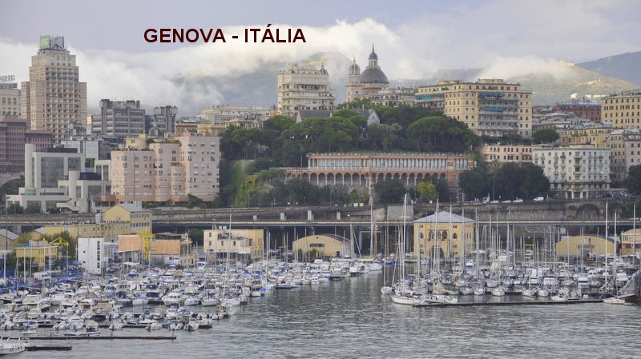
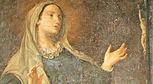
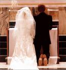

NA
CONFISSÃO UM PRESENTE DIVINO
NA
CONFISSÃO UM PRESENTE DIVINO“PRECIOSO DOM DA VIDA”

FAMÍLIA CRISTÃ
Catarina de Fieschi nasceu no ano 1447, na cidade de Gênova, filha de uma tradicional família italiana, que já havia trazido entre seus descentes, homens e mulheres de valores inegáveis, os quais prestaram preciosos e valorosos serviços à nação, revelando inconfundível amor a pátria por sua bravura e competência, enquanto outros membros cultivaram uma autêntica devoção, com perfeita e admirável disciplina e fidelidade ao DEUS DA VIDA. Na verdade, a numerosa família Fieschi deu à Igreja Católica dois Papas: O Papa Inocêncio IV (25/06/1243 à 07/12/1254) e o Papa Adriano V (11/07/1276 à 18/08/1276). Também na hierarquia militar e na política, a família revelou membros dignos e realizadores. O próprio Giacomo Fieschi, pai de Catarina, tornou-se Vice-Rei de Nápoles.
Catarina foi à última dos cinco filhos do casal, que pertencia à nobreza italiana. Perdeu o seu pai, Giacomo Fieschi, na sua infância, deixando a mãe, senhora Francesca di Negro, a tarefa de educar os filhos como verdadeiros cristãos, sobretudo, amando JESUS e NOSSA SENHORA, com fervor e imensa dignidade. Esta realidade beneficiou todos os membros da família, que como árvore generosa e bem adubada, continuou a apresentar preciosos frutos: Limbânia a irmã mais velha de Catarina, se tornou freira aos dezesseis anos de idade.

É importante realçar, que na sua infância aconteceram alguns fatos que ficaram bem sedimentados no interior de Catarina, ficando evidente que ela havia recebido bênçãos e graças Divinas, pelo seu permanente cuidado com as orações, numa incessante busca de união com NOSSO SENHOR. E a verdade transpareceu visivelmente, quando aos 12 anos de idade, por sua vontade própria, se consagrou as coisas do espírito, lendo e meditando profundamente sobre a Paixão e Morte de NOSSO SENHOR JESUS CRISTO.
QUERIA SER FREIRA
Catarina também quando tinha 13 anos de idade, quis entrar num Convento, talvez inspirada por sua irmã que era uma Freira Agostiniana. Mas a Diretora Espiritual do Mosteiro, mesmo com grande simpatia por ela, que havia se manifestado com sincera vontade de se tornar uma Freira, não a acolheu em face da sua pouca idade. Aparentemente depois desse fato, Catarina voltou ao seu cotidiano, mas ficou com outro pensamento: ela em suas orações se interiorizou muito mais e passou a manifestar seus sentimentos através dos seus próprios escritos sobre assuntos espirituais, mas não com a intenção de publicá-los, e sim, com a intenção de melhor vivê-los, como se junto participasse daqueles comoventes momentos.
SANGRENTAS GUERRAS POLÍTICAS
Naquela época a Itália estava envolvida em revoluções, verdadeiras guerras em diversos lugares, trazendo morte e tristeza a muitas famílias. Também em Genova o conflito estava aceso e em ebulição entre duas grandes forças, os “guelfos”, que eram partidários do poder temporal dos Papas, e os “gibelinos”, que defendiam o poder do Imperador. O Duque de Milão, homem audacioso e com grande poderio militar, observando aquele abominável estado de anarquia em Gênova, marchou firme para o sul e apoderou-se da cidade, lá permanecendo um bom tempo. Todavia, o próprio povo genovês começou a pensar na realidade que acontecia, e que além das mortes, só trazia prejuízo ao povo e as famílias que lá residiam. E então, começaram a fazer contatos buscando entendimento a fim de conseguir a paz. “Gibelinos e Guelfos” se esforçaram pelo bem de todos. Então, com objetivo de alcançar uma boa e eficaz paz para tranquilidade e progresso de todos, os dois grupos guerreiros mais fortes, na busca de solução, instituíram realizar casamentos entre jovens dos dois partidos. E com este objetivo, as famílias dos “Fieschi” e dos “Adorno”, que eram de partidos contrários e não se olhavam com bons olhos, logo quisera participar do esforço para a busca de paz. Para concretizar o desejo de reconciliação, foi arranjado pelos parentes o casamento de Catarina Fieschi com o jovem Giuliano Adorno. Com o falecimento de seu pai em 1643, Catarina com a idade de 16 anos e sempre cultivando com fé os acontecimentos da existência, em tudo ela sentia, a Vontade e a Mão orientadora de DEUS. E assim, decidiu aceitar a iniciativa dos seus parentes que pertenciam ao partido “Guelfos”, casando-se com Giuliano, cujos pais eram do partido “Gibelinos”, estimulando aumentar o numero de famílias para acolherem essa providência, com o objetivo para que existisse a paz.
CASAMENTO INFELIZ
Todavia, com pouco tempo de casados, Catarina sentiu que não estava sendo feliz
com o casamento, pois Giuliano se revelou um inveterado jogador de cartas, 
Acredita-se que por influência dos familiares que a distância percebiam muitas anormalidades na existência do casal, nos anos seguintes ela acolhendo algumas sugestões, passou a realizar algumas visitas a senhoras amigas, que pertenciam ao relacionamento familiar, para distrair e retornar a sua modesta vida social. Entretanto, apesar de tudo, Catarina continuava totalmente submissa, e com imensa e cuidadosa paciência. Mas também, agora com o espírito plenamente conformado e iluminado pela força do “bem”, passou a exercitar as suas preciosas virtudes pessoais, buscando conquistar o seu esposo para DEUS.
NA
CONFISSÃO UM PRESENTE DIVINO
Em Março de 1473 sua irmã que era Freira e soube da imensidão de seus problemas, lhe aconselhou procurar o Padre Confessor na Igreja do Convento de São Bento onde vivia, porque era um homem muito piedoso e experiente na vida espiritual. Catarina agora com a idade de 26 anos, acolheu o conselho da sua querida irmã mais velha Limbânia, e no dia 22 de Março, foi ao Convento e procurou aquele Padre. Assim que o Sacerdote entrou no Confessionário, ela prontamente se aproximou e ajoelhou diante do Confessor, e logo foi começando a descrever as suas verdades, buscando uma profunda conversão, quando de repente, NOSSO SENHOR lhe concedeu uma preciosa e admirável “experiência mística”. Verdadeiramente foi uma das mais extraordinárias e admiráveis operações de DEUS na alma humana. O fato é descrito como um profundo e avassalador sentimento do Amor Divino por Catarina.
GRAÇA ESPECIAL
Um de seus biógrafos descreveu essa “graça especial”, como sendo o dom para a sua completa conversão:“O SENHOR dignou-se iluminar sua mente com um raio tão claro e penetrante de sua Divina Luz, e acender em seu coração uma chama tão ardente de SEU Divino Amor, que ela viu em um momento, e conheceu com muita clareza, quão grande é a Bondade de DEUS, que merece infinito amor; viu também, a grandeza da malícia e perversidade do pecado e da ofensa praticada contra DEUS, quaisquer que sejam, mesmo os pecados mais ligeiros e veniais”.
Naquele momento, ajoelhada diante do Confessor, Catarina sentiu nascer em seu coração, uma contrição tão viva e enérgica contra os seus próprios pecados, ao mesmo tempo em que os seus sentimentos a despertaram para o amor infinito de DEUS, e de tal modo impressionante aconteceu, que a deixou fora de si, dizendo: “Amor meu, Amor meu, nunca mais hei de ofender-TE!”. Mais tarde ela escreveu: “Recebi no coração uma ferida tão grande por força da imensa Bondade do Infinito Amor de DEUS. Era uma uma visão tão clara e nítida, que mostrava os meus defeitos e as minhas próprias misérias! Eu quase desmaiei”. Significa dizer, que a grande ferida no coração, representava a vida que ela levava, em contraste com a imensa Bondade do SENHOR DEUS. A partir desta experiência nasceu no seu coração, a decisão séria e definitiva que orientou a sua vida. Completamente assustada, interrompeu a confissão e saiu correndo dentro da Igreja, de retorno a sua casa.